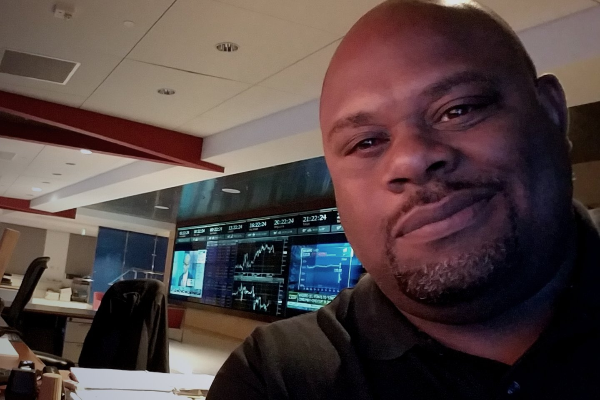

About the founder
Travis Lewis
From mission-critical technical infrastructure to private Intelligence Augmentation built around people who remain accountable across consequential parts of life and work.
Systems that have to work
He built his career supporting mission-critical technology environments, including trading desks where failure was expensive, time mattered, and technology existed to serve the outcome.
His job was to understand the operating requirement, translate it into a working system, and keep it reliable when time and money were at risk.

From infrastructure to decision systems
That work eventually led him into entrepreneurship, computational systems, crypto mining, and algorithmic trading.
While building and operating those systems, he saw the same weakness recur: a sound method could still fail when assumptions were left implicit, rules were applied inconsistently, or relevant history was missing.
He began encoding his trading principles into software. The lesson was larger than trading. Judgment becomes more consistent when its principles, assumptions, and boundaries are made explicit and built into a system.
When modern artificial intelligence tools emerged, Travis began testing them as one mechanism within that larger discipline. He studied where they could compare evidence and expose assumptions, where they fabricated or lost context, and which permissions and review steps were necessary for responsible use.
When the stakes became personal
The idea became real during a consequential eye-surgery decision involving several possible procedures and specialists who did not agree.
The relevant information was scattered across consultations, imaging, clinical research, risks, assumptions, and conflicting recommendations. No single conversation held the entire decision.
Travis built a private system to bring it together. It compared the options, separated evidence from assumption, surfaced unanswered questions, and prepared the tradeoffs for discussion with his doctors.
The system did not make the decision. It helped him arrive prepared to make it.
He then applied the same structure to other work: retain the source record, state assumptions, compare specialist views, record the decision, and bring later changes back to the next review.
Why Avant Garde exists
Avant Garde grew from that work. It builds private Intelligence Augmentation systems for accountable people whose responsibilities cross decisions, commitments, relationships, projects, personal priorities, and time.
The infrastructure may connect the major systems early. The deeper value develops through use: the system earns trust, the client becomes more skilled at directing it, better practices emerge, and both judgment and capability grow stronger over time.
The system prepares the record, preserves continuity, and strengthens the person. Responsibility remains with the person making the call.
They sell you the tool; we install the system.
We build Intelligence Augmentation, not artificial intelligence. Generic AI aims to think for you; success means you are no longer needed. Augmentation does the opposite: the system carries the scattered load, names the assumptions, and reflects your reasoning back so you decide better and leave every call sharper than the last. The machine is the mechanism. You are the decision-maker.
“My work is to build the record a responsible decision requires.”
Travis Lewis
Founder and Chief Cognitive Architect · Avant Garde International Group
History of Intelligence Augmentation · hover over or focus a name for detailsHistory of Intelligence Augmentation · tap a name for details
Earlier attempts to extend memory and reasoning
These thinkers proposed different ways to organize evidence, preserve associations, and work with computers. Open a name to see the problem, the contribution, and the technical limit of its era.
1840William WhewellConsilience
The question he asked
When independent lines of evidence converge on one conclusion, how should a mind hold them together?
Where it led
He called this consilience: the convergence of evidence from different fields toward a common conclusion. The idea later became influential in scientific reasoning, including Darwin's use of multiple lines of evidence.
What blocked him
The method still depended on a person assembling and reconciling the evidence. No durable system could yet preserve those relationships and bring them forward on demand.
1910Paul OtletThe Mundaneum
The question he asked
Could the world's knowledge be organized so that anyone could ask a question and receive the relevant answer?
Where it led
The Mundaneum: millions of index cards, a universal classification, and a knowledge service by mail and telegraph.
What blocked him
The system depended on paper, classification, and extensive manual maintenance. It could organize knowledge at remarkable scale, but it could not update, connect, and retrieve it with the speed later digital systems made possible.
1938H. G. WellsWorld Brain
The question he asked
Could civilization share one living, continuously revised body of knowledge?
Where it led
The World Brain essays: a permanent world encyclopedia as the foundation for better collective decisions.
What blocked him
The available media could preserve and distribute knowledge, but continuous revision, dynamic connection, and responsive retrieval remained difficult.
1945Vannevar BushThe Memex
The question he asked
How can one person command the growing record of what they know, promised, and learned?
Where it led
The Memex: a private desk that stored everything and linked it by association, creating trails of reasoning a person could revisit.
What blocked him
The proposal remained largely conceptual. The associative information system he described was beyond the practical capabilities of the hardware available to him.
1960J. C. R. LickliderMan-Computer Symbiosis
The question he asked
What if people and machines thought together in real time, each doing what it does best?
Where it led
Man-Computer Symbiosis articulated a model of people and computers working together in real time. His later work also helped shape the direction of networked computing research.
What blocked him
Computing was scarce, expensive, and largely institutional. The kind of continuous, personal support he imagined was not yet practical.
1962Douglas EngelbartAugmenting Human Intellect
The question he asked
Could technology raise a person's capability to understand and resolve complex problems without replacing it?
Where it led
Augmenting Human Intellect and the 1968 demonstration helped shape the development of modern interactive computing.
What blocked him
The tools spread more widely than the broader system of practices, knowledge, and collaboration that Engelbart believed augmentation required.
1998Clark & ChalmersThe Extended Mind
The question they asked
Where does the mind end? If a tool is always with you, instantly at hand, and trusted, is it part of your memory?
Where it led
The Extended Mind introduced Otto's notebook as a thought experiment about when an external resource might function as part of a person's cognitive process.
What blocked them
The argument was philosophical, not a technical implementation. Systems capable of preserving context, reasoning, commitments, and risk in one connected environment were not yet available.
NowThe infrastructure is now practical enough to build toward it.
The common thread
Each proposal kept the person responsible for interpreting the record. Modern storage, search, language models, and permissioned workflows now make parts of that work practical at an individual scale.
A connected operating world
Let’s talk about the world you already carry.
Map the responsibilities, systems, relationships, commitments, and decisions that already interact, and what private cognitive infrastructure around them could look like.